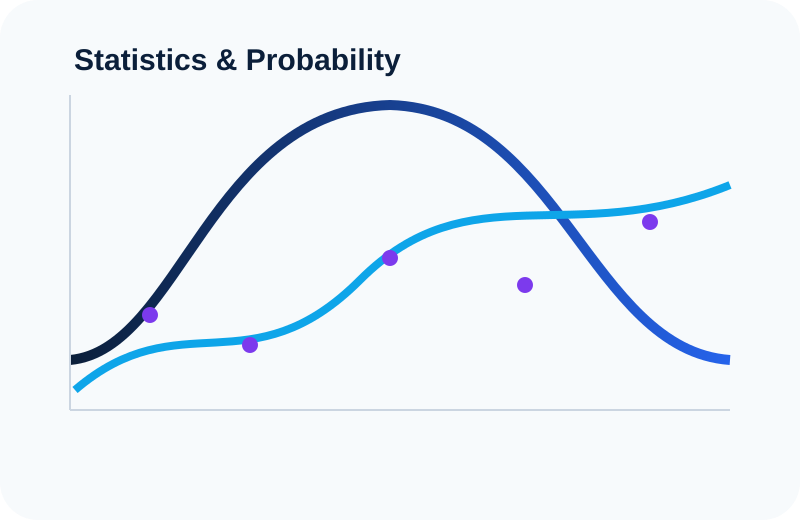
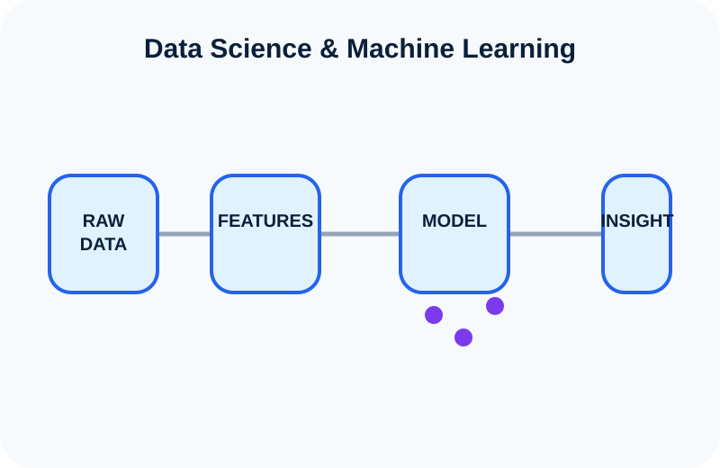

Statistics & Probability
Uncertainty, inference, distributions, survival analysis and the mathematical foundations behind data-driven decisions.
I study and explore Data Science, Statistics, Machine Learning, Deep Learning and Artificial Intelligence — and share what I learn through visual explanations, practical projects and step-by-step tutorials.
I focus on the concepts behind models—not only how to run code, but why the methods work, what assumptions they make, and how to interpret their results.

Uncertainty, inference, distributions, survival analysis and the mathematical foundations behind data-driven decisions.

From raw data and exploratory analysis to predictive models, evaluation and practical applications.

Neural networks, deep learning, generative AI, intelligent agents and the ideas behind modern AI systems.

Using Singular Value Decomposition (SVD) and low-rank reconstruction to recover hidden structure from noisy handwritten digits.

An end-to-end classification project exploring which customers are most likely to leave and which variables contribute to churn.

Applying data science and predictive modeling to understand patterns associated with mortgage credit risk.
View project →
A visual and practical exploration of time-to-event analysis, including survival functions, hazard functions, censoring and Kaplan–Meier estimation.
In DevelopmentLearning materials combine visual explanation, mathematics, code and practical examples.
Censoring, survival functions, hazard functions and Kaplan–Meier estimation from first principles.
How matrix decomposition reveals hidden structure and removes noise from images.
Understanding the mathematical objects behind modern neural networks.
A growing collection of concise explanations about the concepts that power statistics, data science and AI.
Why incomplete time-to-event information still contains useful statistical evidence.
See how matrices can be decomposed into simpler structures.
A visual intuition for representing meaning as geometry.
Planner, analyst and executor roles in multi-agent systems.
My academic path combines Economics, Data Science and Artificial Intelligence. I use this site to document what I learn and turn complex ideas into clear explanations, visual examples and practical projects.
More About Me